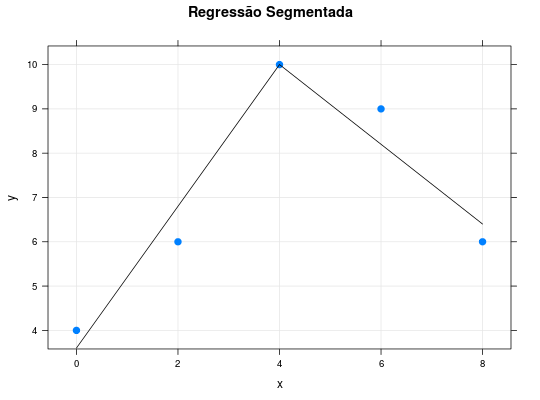

Dados para exercício analítico, com o objetivo de obter as estimativas de mínimos quadrados dos parâmetros de um modelo de regressão linear segmentada.
Um data.frame de 5 linhas e 2 colunas, em que
xyDEMÉTRIO; ZOCCHI (2011), Exercício 2.12.5 pág. 60.
data(DemetrioEx2.12.5)#> Warning: data set ‘DemetrioEx2.12.5’ not foundstr(DemetrioEx2.12.5)#> 'data.frame': 5 obs. of 2 variables: #> $ x: num 0 2 4 6 8 #> $ y: num 4 6 10 9 6library(lattice) xyplot(y ~ x, data = DemetrioEx2.12.5, cex = 1.1, pch = 19, main = 'Regressão Segmentada', grid = TRUE, panel = function(x, y, ...) { # Regressão Segmentada com ponto de corte conhecido b <- DemetrioEx2.12.5$x[3] m0 <- lm(y ~ x + I(pmax(x - b, 0)), data = DemetrioEx2.12.5) # Pontos que definem os dois segmentos cx <- c(0, b, 8) cy <- predict(m0, newdata = data.frame(x = cx)) panel.xyplot(x, y, ...) panel.segments(cx[1], cy[1], cx[2], cy[2]) panel.segments(cx[2], cy[2], cx[3], cy[3]) })